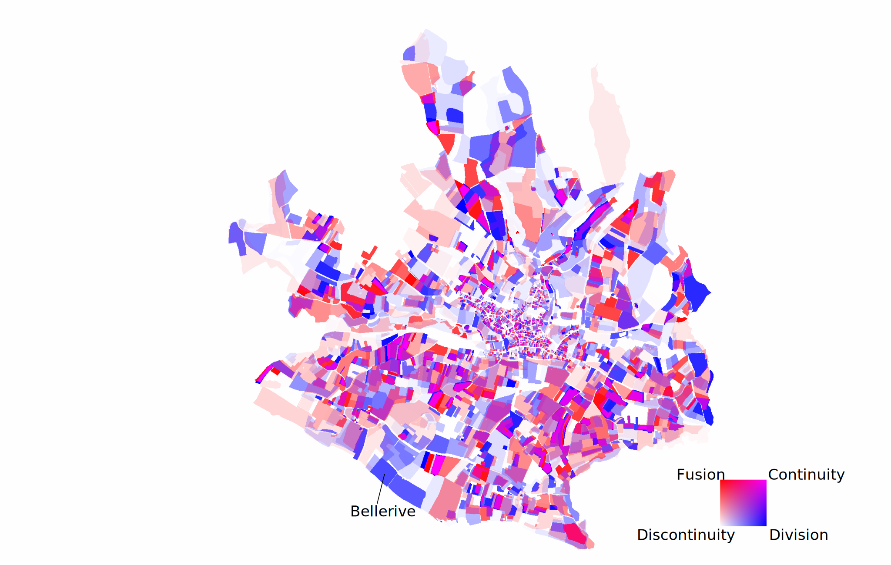
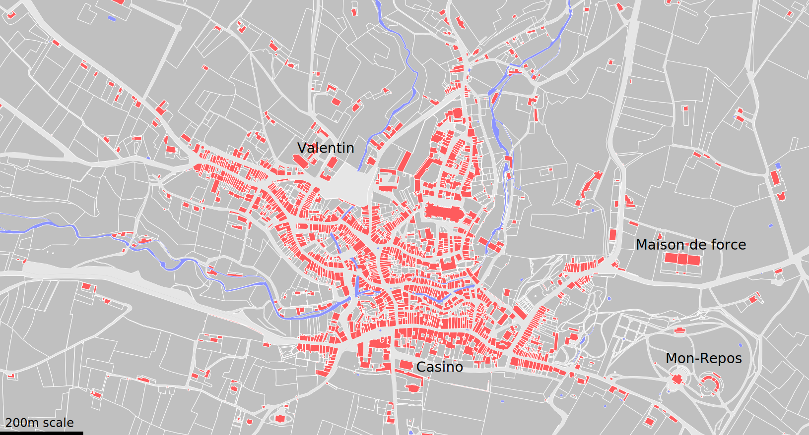
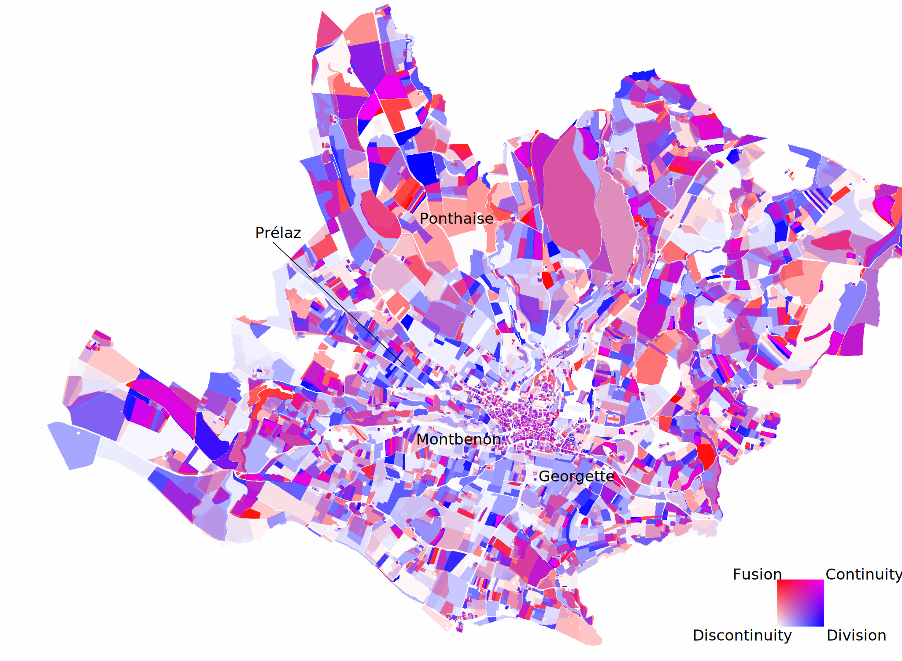
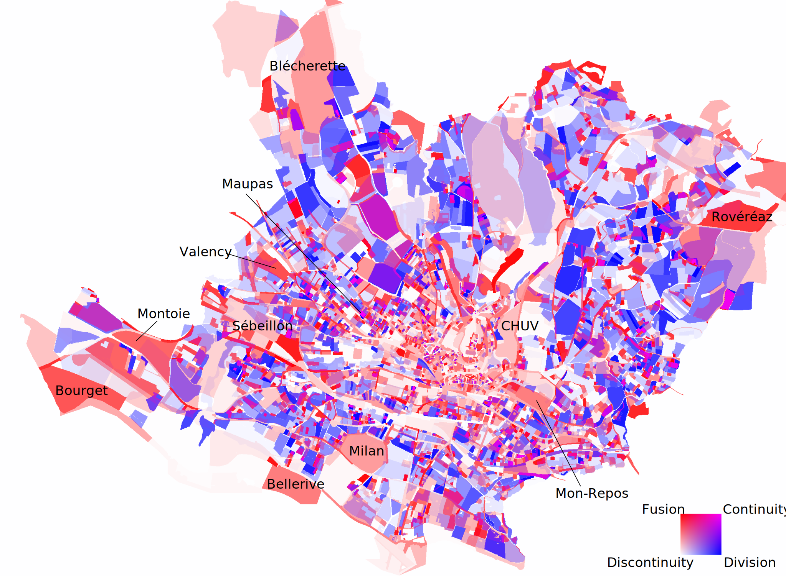
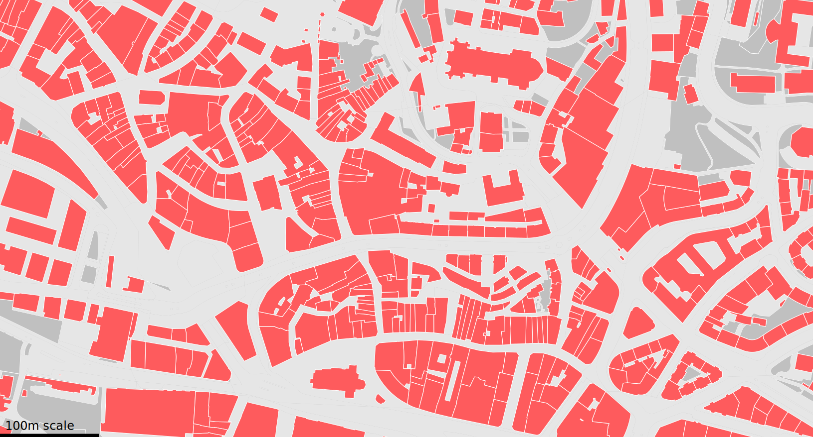
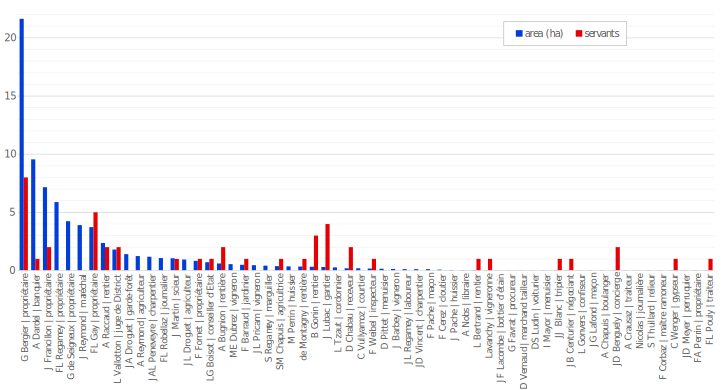

Revealing the Structure of Land Ownership through the Automatic Vectorisation of Swiss Cadastral Plans
Session 1A
Authors
Affiliation
Rémi Petitpierre
Time Machine Unit, EPFL
Isabella di Lenardo
Time Machine Unit, EPFL
Lucas Rappo
Time Machine Unit, EPFL
Published
July 24, 2024
Abstract
This paper explores how the dynamics and structure of land ownership can be studied by automating the vectorisation of historical cadastral sources. Cadastres are a granular, relatively homogeneous and abundant source. From the 18th century, they are also relatively well aligned with the paradigms of modern geodata. Digital or quantitative methods seem therefore particularly well suited to approach these substantial archival corpora. Our analysis focuses mainly on three cadastres of Lausanne (1722, 1831, 1883), which total 570 plats. The plans are first georeferenced, before being semantically segmented using a neural model, and vectorised. Compared to a manual approach, automation reduces the vectorisation workload by 12 fold. We study the dynamics of persistence by deploying a spatial matching methodology, geometrically detecting parcel fusions and divisions across temporal layers. We also investigate the social structure of ownership in Lausanne at the beginning of the 19th century by relating representative owners to their socioprofessional status based on historical population censuses.
Keywords
cadastral plans, vectorisation, land ownership, spatial dynamics, historical social geography
Introduction
Cadastral plans are a granular, relatively homogeneous, and abundant source for studying land ownership and spatial relationships in 19th century Western Europe (Clergeot 2007; Lenardo et al. 2021; Lelo 2020). Moreover, from the 18th century, cadastres are generally geometrical, and therefore well aligned with the paradigms of modern geodata. Due to the substantial number of entries and the quantitative nature of these historical sources, digital methods leveraging geographic information systems (GIS) seem most appropriate to approach these archival corpora. In addition, the Napoleonic period resulted in a remarkable harmonization of cadastral ordinances, survey methods, and conventions of representation throughout Europe, which persisted until the middle of the 19th century (Hennet 1811; Soulier and Berdez 1827; Petitpierre 2023). This representational coherence makes cadastral plans an interesting target for automated recognition (Follin, Simonetto, and Chalais 2021; Göderle et al. 2023; Petitpierre, Rappo, and Lenardo 2023; Ares Oliveira et al. 2019). This research explores how 19th-century cadastres can be massively read and vectorised by machines, and how the resulting geodata can be used to study the dynamics of persistence in the parcel fabric and land ownership.
Data collection approach
Our data collection approach is based on supervised semantic segmentation. Sematic segmentation is a pixel classification method, where each pixel in the image, i.e. the digitised cadastral plats, is attributed a single semantic class (see Figure 1). In the present case, we follow the ontology proposed by (Petitpierre and Guhennec 2023) and annotate the images with four land use classes (built, non-built, water, and road network), plus the contours, which allow us to delineate the geometries (Chen et al. 2021). In total, 78 cadastral plats were manually annotated (42 for Lausanne, 10 for Neuchatel, 8 for Geneva, and 18 from various communes in the states of the First French Empire). Thirty percent of the dataset was preserved for validation (2/3), and testing (1/3). A Mask2Former (Cheng et al. 2022; OpenMMLab 2022) neural model was trained on the remaining labels, using 768x768 image crops, until convergence.
The trained segmentation model is used to automate the recognition of the remaining cadastral plats for three cadastral series of Lausanne (Melotte and Perey 1722; Berney 1831; Deluz 1886), which total 570 plats. In a first step, the sheets were georeferenced and separated from the legend. Second, the semantic segmentation was applied directly on the georeferenced images. Third, the resulting predictions masks were manually reviewed, and the most salient inconsistencies were corrected. Finally, the raster masks were vectorized, as described in (Vaienti et al. 2023), resulting in 69,083 extracted geometries. The data collection workload is estimated to 15 workdays for the specific annotation of 42 plats, 5 workdays for the initial correction of the predictions, and 2 workdays (excluding research and development) for the automatic segmentation and vectorisation. By contrast, the estimated workload for manually vectorising the whole corpus would be over 260 days.
Figure 1: Illustration of the raster/pixel annotation of the 1886 cadastre of Lausanne by Louis Deluz, using five semantic classes (red: built, dark grey: non-built, light grey: road network, violet: water, white: contours, black: background).
Persistence
We adopt two complementary approaches for studying the structure of land ownership. The first is based on the measure of persistence in the parcel fabric. The second, which will be presented later, focuses on the social structure of land ownership, through the analysis of owners. Regarding persistence, two processes are considered: the division of a plot into two or more plots, or the fusion –i.e. the grouping– of two or more plots together. We call continuity the state in which parcel fabric is unchanged. Finally, discontinuity denotes a situation in which the parcel fabric has been otherwise altered by rezoning.
Fusion and division are measured separately. The detection of both processes is based on the spatial matching of the parcels in two distinct historical layers. Only child parcels whose overlap with the parent is at least 50% are considered for division, and vice versa for fusion. For fusion, the measure of shape similarity is based on the computation of the absolute difference of turning functions (Arkin et al. 1991) between the child parcels and the parent one, and vice versa. This method, which intuitively focuses on a shape’s salient angles, excels at comparing shapes which exhibit inequal level of detail or resolution, which is precisely the case for the extracted geometries, originating from diverse series1. This process allows us to establish maps of land persistence and continuity (Figure 2, Figure 4, and Figure 6), whose results will be presented and discussed in a chronological order. The relative code is published along with this article.

Figure 2: Dynamics of land plot persistence in Lausanne between 1722 and 1831. The red areas underwent fusion processes, whereas division dynamics are observed in blue areas. Magenta indicates continuity.

Figure 3: Expansion of the city outside its historical enclosure between 1722 (top) and 1831 (bottom).
While the changes observed in the first time stratum (1722-1831, Figure 2) might appear somehow disordered at first sight, it is in fact due to the complexity of the dynamics observed. At the beginning of the 18th century, the development of the city was mainly contained within its enclosure, to the exception of the three faubourgs: Halle, Martheray and Chêne2. The demand for space was stimulating the densification of buildings within the enclosure (Rickli 1978). The Rôtillon neighbourhood is a good example of this phenomenon. The vegetable gardens found there, whose yield was probably not very profitable since they were in the shadow of the hill of Bourg, were replaced by small buildings.
Facing continued demand for space, the city’s medieval fortifications were progressively dismantled. The new buildings and the reorganization of land parcels at that time (Figure 2) met four distinct demands. The first two impacted development in the immediate vicinity of the city (Figure 3). First, infrastructures, such as the chapel and the charity school of Valentin, the casino to the south, and the “maison de force” (prison) to the east. Second, the expansion of productive areas, concentrating mainly along the Flon, downstream (sawmills, mills) and upstream (mills, tanneries) of the town. The two remaining demands impacted not only the close suburbs, but the whole commune. The first was the multiplication of dispersed rural housing, with the construction of several small agricultural estates scattered across the territory. We can also observe the emergence of periurban land estates, such as the most spectacular mansion in Mon Repos, owned by Alexandre Perdonnet (Figure 3), but also the new estate of Bellerive (Figure 2), reconstructed around 1787 by the Francillon family, for example (Grandjean 1982). Farms and estates had contrasting effects on the redrawing of parcels, fueling both fusions and divisions. It is noteworthy, however, that their impact is above all localized and dispersed; hence the strong alternation between both dynamics observed in Figure 2. Finally, let us also highlight that many plots to the south-east and south-west of the town show remarkable persistence. These are mainly vineyards, which stability also suggests continuity in the economic and cultural value of these lands.

Figure 4: Dynamics of land plot persistence in Lausanne between 1831 and 1883.
Figure 5: Morcellation of the land in Prélaz (west), as depicted in the 1883 cadastre.
This stability contrasts with the dynamics observed in the 19th and 20th centuries (Figure 4). Between 1831 and 1883, the prevailing trend was to extend the city westwards (to Prélaz, Figure 5) and southwards (to Georgette), in the direction of the new railway station. This expansion is taking place precisely at the expense of the vineyards. It is characterized by the division of agricultural plots into smaller subdivisions on which mainly apartment buildings are built. Near Ponthaise3, we note a marked fusion trend. This is due to the purchase of fields by the State of Vaud and the Commune for the construction of new training grounds and barracks, to replace the place d’armes in Montbenon, reallocated for the new Federal Court of Justice. It is noteworthy that the plots of land located in the historic city center remain relatively stable, despite the first major works including the construction of the Grand Pont and the vaulting of the Flon and Louve rivers.

Figure 6: Dynamics of land plot persistence in Lausanne between 1883 and 2023.

Figure 7: Dynamics of parcel fusions in the city center between 1883 (top) and 2023 (bottom).
From 1883 onwards, on the contrary, the layout of the downtown area changed significantly (Figure 6, Figure 7). Following the 1896 publication of the Schnetzler report on health conditions, most of the buildings, deemed dilapidated, and particularly the entire Rôtillon district, were demolished to be replaced by modern housing. The scale of this work can be seen in the impressive dynamics of plot mergers, through which old buildings were being replaced by larger constructions. Urban sprawl, on the other hand, is characterized by a dynamic of morcellation, which no longer impacts only the former vineyards, but in fact all agricultural land, which was sold in allotments to meet the high demand for city. The main exceptions are large infrastructures such as the Milan, Mon Repos, Valency and Bourget public parks, the Montoie cemetery, the Sébeillon train marshalling yard, the Blécherette airport, the CHUV hospital and the Rovéréaz agricultural estate. However, despite the time that separates both cadastres, several plots of land remain, such as the urban houses in Maupas.
Social structure of land ownership
To investigate the social structure of land ownership, we adopt a distinct approach. More specifically, we rank the owners in the 1831 cadastre of Lausanne by the total area they own. From this, we randomly pick a representative sample of 60 owners. We cross-reference these owners by looking for a corresponding entry in the 1832 and 1835 population censuses of Lausanne Petitpierre, Kramer, and Rappo (2023). We gather two kinds of information from that source: occupation, and number of servants. This makes it possible to relate the ownership strata back with the social status of individuals.
The aggregated results of that step are described in Figure 8. The first thing that can be noted is the great disparity in the repartition of land ownership. The upper decile owned several hectares of land, which almost always included a landed estate and its dependencies, a vineyard, farmlands, and forests. Most of them simply define their occupation as “owners” (propriétaires); other occupations in the sample include “banker” and “marshal”. Just after come also an “annuitant” (rentier) and a “district judge”. This social stratum also typically employs one, two, or up to eight household servants. Later in the sample, we also encounter farmers, winegrowers, and forester. These typically own farmlands, along with a farm, usually comprising a stable, barn and hayloft. Finally, a third category of owners is composed of craftsmen and merchants. They usually own a house inside the city, sometimes accompanied by a courtyard, a garden, barn or other annexes. They sometimes employ one or two servants. Finally, the last category, by far the largest, is composed of non-owners. They were 86.4% of the adult population at the time. A large part of them were tenants, but also servants or boarders, who did not event live with a nuclear family of their own. In comparison, in 2022, the non-owners represent 61.3% of the households. Even if we exclude the fact that, in 1831, married women were generally denied shared ownership, we still reach an estimate of 72% of men who were non-owners. The Gini index of land ownership in Lausanne in 1831 would equal to 0.9, which indicates a particularly unequal distribution4.

Figure 8: Representative samples of owners (n=60) from the 1831 cadastre, ranked by total area owned (blue, in hectares), along with the number of servants employed in their household (red). The occupation of each owner, extracted from the 1832 or 1835 population census, is indicated after their names, in the labels of the horizontal axis.
General discussion and Conclusion
Spatial matching and the measure of morphological proximity is key to harnessing the wealth of geodata and operationalizing the analysis of plot dynamics. Spatial analysis of the territory reveals complex, protean trends that would be difficult to uncover without a spatial, quantitative and comparative approach based on digitized sources. Although certain manual steps, such as georeferencing, are still required, segmentation and vectorization are instrumental to processing such large cartographic corpora.
Digitization also makes it possible to create links between sources, such as cadastres and censuses, by making their content searchable. Disambiguating individuals remains partly qualitative, as it is often necessary to reason on a cluster of clues. This is due in particular to a scant pool of names, resulting in many homonyms: for instance, there were eight household heads named “Jean Louis Blanc” in Lausanne in 1835. Digitisation therefore also highlights this type of contradiction, which might otherwise go unnoticed when reading the sources in progressive order.
Ares Oliveira, Sofia, Isabella di Lenardo, Bastien Tourenc, and Frederic Kaplan. 2019. “A Deep Learning Approach to CadastralComputing.” In DH2019. Utrecht, Netherlands. https://dev.clariah.nl/files/dh2019/boa/0691.html.
Arkin, E. M., L. P. Chew, D. P. Huttenlocher, K. Kedem, and J. S. B. Mitchell. 1991. “An Efficiently Computable Metric for Comparing Polygonal Shapes.”IEEE Transactions on Pattern Analysis and Machine Intelligence 13 (3): 209–16. https://doi.org/10.1109/34.75509.
Berney, Abraham. 1831. “Plan Cadastral Par l’arpenteur AbrahamBerney.”
Chen, Yizi, Edwin Carlinet, Joseph Chazalon, Clément Mallet, Bertrand Duménieu, and Julien Perret. 2021. “Vectorization of HistoricalMapsUsingDeepEdgeFiltering and ClosedShapeExtraction.” In Document Analysis and Recognition – ICDAR 2021, edited by Josep Lladós, Daniel Lopresti, and Seiichi Uchida, 510–25. Cham: Springer International Publishing.
Cheng, Bowen, Ishan Misra, Alexander G. Schwing, Alexander Kirillov, and Rohit Girdhar. 2022. “Masked-Attention MaskTransformer for UniversalImageSegmentation.” arXiv. https://doi.org/10.48550/arXiv.2112.01527.
Clergeot, Pierre. 2007. Cent Millions de Parcelles En France: 1807, Un Cadastre Pour l’Empire. Paris: Editions Publi-Topex.
Deluz, Louis. 1886. “Plans de Lausanne.”
Follin, Jean-Michel, Élisabeth Simonetto, and Anthony Chalais. 2021. “Détection Automatique Des Parcelles Sur Les Plans Napoléoniens : Comparaison de Deux Méthodes.”Humanités Numériques, no. 3 (May). https://doi.org/10.4000/revuehn.1779.
Göderle, Wolfgang, Christian Macher, Katrin Mauthner, Oliver Pimas, and Fabian Rampetsreiter. 2023. “AI-Driven StructureDetection and InformationExtraction from HistoricalCadastralMaps (Early 19th CenturyFrancisceanCadastre in the Province of Styria) and CurrentHigh-Resolution Satellite and AerialImagery for RemoteSensing.” arXiv. https://doi.org/10.48550/arXiv.2312.07560.
Grandjean, Marcel. 1982. Lausanne: Villages, Hameaux Et Maisons de l’ancienne Campagne Lausannoise. Birkhäuser. Vol. 4. Monuments d’art Et d’histoire Du Canton de Vaud. Basel.
Hennet, Albert-Joseph-Ulpien. 1811. Recueil Méthodique Des Lois, Décrets, Règlemens, Instructions Et Décisions Sur Le Cadastre de La France. Paris: Imprimerie impériale.
Lelo, Keti. 2020. “Analysing Spatial Relationships Through the Urban Cadastre of Nineteenth-Century Rome.”Urban History 47 (3): 467–87. https://doi.org/10.1017/S0963926820000188.
Lenardo, Isabella di, Raphaël Barman, Federica Pardini, and Frédéric Kaplan. 2021. “Une Approche Computationnelle Du Cadastre Napoléonien de Venise.”Humanités Numériques 3 (May). https://doi.org/0.4000/revuehn.1786.
Melotte, Sebastian, and Claude Perey. 1722. “Plans Du Territoire de Lausanne.”
Petitpierre, Remi. 2023. “Mapping Memes in the NapoleonicCadastre: ExpandingFrontiers in Memetics.” In Digital Humanities 2023: Book of Abstracts, 3. Graz, Austria: Zenodo. https://doi.org/10.5281/zenodo.8107916.
Petitpierre, Remi, and Paul Guhennec. 2023. “Effective Annotation for the Automatic Vectorization of Cadastral Maps.”Digital Scholarship in the Humanities, March. https://doi.org/10.1093/llc/fqad006.
Petitpierre, Remi, Marion Kramer, and Lucas Rappo. 2023. “An End-to-End Pipeline for Historical Censuses Processing.”International Journal on Document Analysis and Recognition (IJDAR), March. https://doi.org/10.1007/s10032-023-00428-9.
Petitpierre, Remi, Marion Kramer, Lucas Rappo, and Isabella di Lenardo. 2023. “1805-1898 CensusRecords of Lausanne : A LongDigitalDataset for DemographicHistory.”https://doi.org/10.5281/zenodo.7711640.
Petitpierre, Remi, Lucas Rappo, and Isabella di Lenardo. 2023. “Recartographier l’espace Napoléonien.” In. https://hal.science/hal-04109214.
Rickli, Jean Daniel. 1978. “Lausanne: Deux Siècles de Devenir Urbain.”Habitation 51 (12).
Soulier, and Berdez. 1827. Instructions Données Par Le Département Des Finances Pour La Levée Des Plans Et l’établissement Du Cadastre, Ensuite de La Décision Du Conseil d’Etat Du 6 Décembre 1826. Frères Blanchard. Lausanne.
Vaienti, Beatrice, Rémi Petitpierre, Isabella di Lenardo, and Frédéric Kaplan. 2023. “Machine-Learning-EnhancedProceduralModeling for 4DHistoricalCitiesReconstruction.”Remote Sensing 15 (13): 3352. https://doi.org/10.3390/rs15133352.
Footnotes
Note that here we use the absolute difference L1 instead of the squared difference L2, which is favored by Arkin. This is intentional, as we believe that shape dissimilarities should be equally weighted in the present use case.↩︎
Here, we use the historical spelling of place names, as given in the sources.↩︎
In comparison, we can easily estimate the distribution of fortune in Switzerland in 2022 by interpolating the aggregated statistics of the Federal Statistical Office using cubic spline, which yields a value of 0.82, still corresponding to a less unequal distribution.↩︎
---submission_id: 454categories: 'Session 1A'title: Revealing the Structure of Land Ownership through the Automatic Vectorisation of Swiss Cadastral Plansauthor: - name: Rémi Petitpierre orcid: 0000-0001-9138-6727 email: remi.petitpierre@epfl.ch affiliations: - Time Machine Unit, EPFL - name: Isabella di Lenardo orcid: 0000-0002-1747-9164 email: isabella.dilenardo@epfl.ch affiliations: - Time Machine Unit, EPFL - name: Lucas Rappo orcid: 0000-0002-7172-2495 affiliations: - Time Machine Unit, EPFLkeywords: - cadastral plans - vectorisation - land ownership - spatial dynamics - historical social geographyabstract: This paper explores how the dynamics and structure of land ownership can be studied by automating the vectorisation of historical cadastral sources. Cadastres are a granular, relatively homogeneous and abundant source. From the 18th century, they are also relatively well aligned with the paradigms of modern geodata. Digital or quantitative methods seem therefore particularly well suited to approach these substantial archival corpora. Our analysis focuses mainly on three cadastres of Lausanne (1722, 1831, 1883), which total 570 plats. The plans are first georeferenced, before being semantically segmented using a neural model, and vectorised. Compared to a manual approach, automation reduces the vectorisation workload by 12 fold. We study the dynamics of persistence by deploying a spatial matching methodology, geometrically detecting parcel fusions and divisions across temporal layers. We also investigate the social structure of ownership in Lausanne at the beginning of the 19th century by relating representative owners to their socioprofessional status based on historical population censuses.key-points: - We vectorise cadastral plans using an automated approach - We study the dynamics of parcel persistence based on geometries - We investigate the social structure of ownership cross-matching comparing cadastral sources with population censusesdate: 07-24-2024bibliography: references.bib---## IntroductionCadastral plans are a granular, relatively homogeneous, and abundant source for studying land ownership and spatial relationships in 19th century Western Europe [@clergeot_cent_2007;@di_lenardo_approche_2021;@lelo_analysing_2020]. Moreover, from the 18th century, cadastres are generally geometrical, and therefore well aligned with the paradigms of modern geodata. Due to the substantial number of entries and the quantitative nature of these historical sources, digital methods leveraging geographic information systems (GIS) seem most appropriate to approach these archival corpora. In addition, the Napoleonic period resulted in a remarkable harmonization of cadastral ordinances, survey methods, and conventions of representation throughout Europe, which persisted until the middle of the 19th century [@hennet_recueil_1811;@soulier_instructions_1827;@petitpierre_mapping_2023]. This representational coherence makes cadastral plans an interesting target for automated recognition [@follin_detection_2021;@goderle_ai-driven_2023;@petitpierre_recartographier_2023;@ares_oliveira_deep_2019]. This research explores how 19th-century cadastres can be massively read and vectorised by machines, and how the resulting geodata can be used to study the dynamics of persistence in the parcel fabric and land ownership.## Data collection approachOur data collection approach is based on supervised semantic segmentation. Sematic segmentation is a pixel classification method, where each pixel in the image, i.e. the digitised cadastral plats, is attributed a single semantic class (see @fig-1). In the present case, we follow the ontology proposed by [@petitpierre_effective_2023] and annotate the images with four land use classes (built, non-built, water, and road network), plus the contours, which allow us to delineate the geometries [@chen_vectorization_2021]. In total, 78 cadastral plats were manually annotated (42 for Lausanne, 10 for Neuchatel, 8 for Geneva, and 18 from various communes in the states of the First French Empire). Thirty percent of the dataset was preserved for validation (2/3), and testing (1/3). A Mask2Former [@cheng_masked-attention_2022;@noauthor_mmsegmentation_2022] neural model was trained on the remaining labels, using 768x768 image crops, until convergence.The trained segmentation model is used to automate the recognition of the remaining cadastral plats for three cadastral series of Lausanne [@melotte_plans_1722;@berney_plan_1831;@deluz_plans_1886], which total 570 plats. In a first step, the sheets were georeferenced and separated from the legend. Second, the semantic segmentation was applied directly on the georeferenced images. Third, the resulting predictions masks were manually reviewed, and the most salient inconsistencies were corrected. Finally, the raster masks were vectorized, as described in [@vaienti_machine-learning-enhanced_2023], resulting in 69,083 extracted geometries. The data collection workload is estimated to 15 workdays for the specific annotation of 42 plats, 5 workdays for the initial correction of the predictions, and 2 workdays (excluding research and development) for the automatic segmentation and vectorisation. By contrast, the estimated workload for manually vectorising the whole corpus would be over 260 days.{#fig-1}## PersistenceWe adopt two complementary approaches for studying the structure of land ownership. The first is based on the measure of persistence in the parcel fabric. The second, which will be presented later, focuses on the social structure of land ownership, through the analysis of owners. Regarding persistence, two processes are considered: the division of a plot into two or more plots, or the fusion –i.e. the grouping– of two or more plots together. We call continuity the state in which parcel fabric is unchanged. Finally, discontinuity denotes a situation in which the parcel fabric has been otherwise altered by rezoning.Fusion and division are measured separately. The detection of both processes is based on the spatial matching of the parcels in two distinct historical layers. Only child parcels whose overlap with the parent is at least 50% are considered for division, and vice versa for fusion. For fusion, the measure of shape similarity is based on the computation of the absolute difference of turning functions [@arkin_efficiently_1991] between the child parcels and the parent one, and vice versa. This method, which intuitively focuses on a shape's salient angles, excels at comparing shapes which exhibit inequal level of detail or resolution, which is precisely the case for the extracted geometries, originating from diverse series[^1]. This process allows us to establish maps of land persistence and continuity (@fig-2, @fig-4, and @fig-6), whose results will be presented and discussed in a chronological order. The relative code is published along with this article. {#fig-2}{#fig-3}While the changes observed in the first time stratum (1722-1831, @fig-2) might appear somehow disordered at first sight, it is in fact due to the complexity of the dynamics observed. At the beginning of the 18th century, the development of the city was mainly contained within its enclosure, to the exception of the three faubourgs: Halle, Martheray and Chêne[^2]. The demand for space was stimulating the densification of buildings within the enclosure [@rickli_lausanne_1978]. The Rôtillon neighbourhood is a good example of this phenomenon. The vegetable gardens found there, whose yield was probably not very profitable since they were in the shadow of the hill of Bourg, were replaced by small buildings.Facing continued demand for space, the city's medieval fortifications were progressively dismantled. The new buildings and the reorganization of land parcels at that time (@fig-2) met four distinct demands. The first two impacted development in the immediate vicinity of the city (@fig-3). First, infrastructures, such as the chapel and the charity school of Valentin, the casino to the south, and the "maison de force" (prison) to the east. Second, the expansion of productive areas, concentrating mainly along the Flon, downstream (sawmills, mills) and upstream (mills, tanneries) of the town. The two remaining demands impacted not only the close suburbs, but the whole commune. The first was the multiplication of dispersed rural housing, with the construction of several small agricultural estates scattered across the territory. We can also observe the emergence of periurban land estates, such as the most spectacular mansion in Mon Repos, owned by Alexandre Perdonnet (@fig-3), but also the new estate of Bellerive (@fig-2), reconstructed around 1787 by the Francillon family, for example [@grandjean_lausanne_1982]. Farms and estates had contrasting effects on the redrawing of parcels, fueling both fusions and divisions. It is noteworthy, however, that their impact is above all localized and dispersed; hence the strong alternation between both dynamics observed in @fig-2. Finally, let us also highlight that many plots to the south-east and south-west of the town show remarkable persistence. These are mainly vineyards, which stability also suggests continuity in the economic and cultural value of these lands.{#fig-4}{#fig-5}This stability contrasts with the dynamics observed in the 19th and 20th centuries (@fig-4). Between 1831 and 1883, the prevailing trend was to extend the city westwards (to Prélaz, @fig-5) and southwards (to Georgette), in the direction of the new railway station. This expansion is taking place precisely at the expense of the vineyards. It is characterized by the division of agricultural plots into smaller subdivisions on which mainly apartment buildings are built. Near Ponthaise[^3], we note a marked fusion trend. This is due to the purchase of fields by the State of Vaud and the Commune for the construction of new training grounds and barracks, to replace the place d'armes in Montbenon, reallocated for the new Federal Court of Justice. It is noteworthy that the plots of land located in the historic city center remain relatively stable, despite the first major works including the construction of the Grand Pont and the vaulting of the Flon and Louve rivers.{#fig-6}{#fig-7}From 1883 onwards, on the contrary, the layout of the downtown area changed significantly (@fig-6, @fig-7). Following the 1896 publication of the Schnetzler report on health conditions, most of the buildings, deemed dilapidated, and particularly the entire Rôtillon district, were demolished to be replaced by modern housing. The scale of this work can be seen in the impressive dynamics of plot mergers, through which old buildings were being replaced by larger constructions. Urban sprawl, on the other hand, is characterized by a dynamic of morcellation, which no longer impacts only the former vineyards, but in fact all agricultural land, which was sold in allotments to meet the high demand for city. The main exceptions are large infrastructures such as the Milan, Mon Repos, Valency and Bourget public parks, the Montoie cemetery, the Sébeillon train marshalling yard, the Blécherette airport, the CHUV hospital and the Rovéréaz agricultural estate. However, despite the time that separates both cadastres, several plots of land remain, such as the urban houses in Maupas.## Social structure of land ownershipTo investigate the social structure of land ownership, we adopt a distinct approach. More specifically, we rank the owners in the 1831 cadastre of Lausanne by the total area they own. From this, we randomly pick a representative sample of 60 owners. We cross-reference these owners by looking for a corresponding entry in the 1832 and 1835 population censuses of Lausanne [@petitpierre_1805-1898_2023,@petitpierre_endtoend_2023]. We gather two kinds of information from that source: occupation, and number of servants. This makes it possible to relate the ownership strata back with the social status of individuals.The aggregated results of that step are described in @fig-8. The first thing that can be noted is the great disparity in the repartition of land ownership. The upper decile owned several hectares of land, which almost always included a landed estate and its dependencies, a vineyard, farmlands, and forests. Most of them simply define their occupation as "owners" (propriétaires); other occupations in the sample include "banker" and "marshal". Just after come also an "annuitant" (rentier) and a "district judge". This social stratum also typically employs one, two, or up to eight household servants. Later in the sample, we also encounter farmers, winegrowers, and forester. These typically own farmlands, along with a farm, usually comprising a stable, barn and hayloft. Finally, a third category of owners is composed of craftsmen and merchants. They usually own a house inside the city, sometimes accompanied by a courtyard, a garden, barn or other annexes. They sometimes employ one or two servants. Finally, the last category, by far the largest, is composed of non-owners. They were 86.4% of the adult population at the time. A large part of them were tenants, but also servants or boarders, who did not event live with a nuclear family of their own. In comparison, in 2022, the non-owners represent 61.3% of the households. Even if we exclude the fact that, in 1831, married women were generally denied shared ownership, we still reach an estimate of 72% of men who were non-owners. The Gini index of land ownership in Lausanne in 1831 would equal to 0.9, which indicates a particularly unequal distribution[^4].{#fig-8}## General discussion and ConclusionSpatial matching and the measure of morphological proximity is key to harnessing the wealth of geodata and operationalizing the analysis of plot dynamics. Spatial analysis of the territory reveals complex, protean trends that would be difficult to uncover without a spatial, quantitative and comparative approach based on digitized sources. Although certain manual steps, such as georeferencing, are still required, segmentation and vectorization are instrumental to processing such large cartographic corpora.Digitization also makes it possible to create links between sources, such as cadastres and censuses, by making their content searchable. Disambiguating individuals remains partly qualitative, as it is often necessary to reason on a cluster of clues. This is due in particular to a scant pool of names, resulting in many homonyms: for instance, there were eight household heads named "Jean Louis Blanc" in Lausanne in 1835. Digitisation therefore also highlights this type of contradiction, which might otherwise go unnoticed when reading the sources in progressive order.<!---## Code### Imports```import shapefile, tqdm, cv2, jsonimport numpy as npimport pandas as pdfrom shapely.geometry import Polygon, MultiPolygon, Pointfrom shapely.ops import unary_unionimport geopandas as gpdimport rtreefrom rtree import indexfrom sklearn.linear_model import LinearRegressionfrom sklearn.preprocessing import PolynomialFeaturesfrom sklearn.model_selection import train_test_splitfrom PIL import Imageimport matplotlib.pyplot as plt%matplotlib inline```### Functions```def createIndex(gdf: gpd.GeoDataFrame): '''Creates an Index to accelerate data processing''' idx = index.Index() valid_geometries = list() for pos, geom in enumerate(gdf.geometry): # Skip null or empty geometries if geom is None: continue if geom.is_empty: continue # Validate and possibly fix geometry if not geom.is_valid: geom = geom.buffer(0) if not geom.is_valid or geom.is_empty: continue # Skip still invalid or empty geometries after fixing valid_geometries.append(geom) # Ensure the bounds are in the correct format if len(geom.bounds) == 4: idx.insert(pos, geom.bounds) else: print(f"Skipped geometry at position {pos} with invalid bounds: {geom.bounds}") gdf.geometry = gpd.GeoSeries(valid_geometries) return idx, gdfdef matchParcels(gdf_1: gpd.GeoDataFrame, gdf_2: gpd.GeoDataFrame, index_1: rtree.Index, index_2: rtree.Index): '''Check which geometries are matching together and computes the relative overlap''' matches = dict() for i, poly1 in enumerate(tqdm.tqdm(gdf_1.geometry)): if poly1 is None: continue # Find potential matches based on bounding box overlap potential_indices = list(index_2.intersection(poly1.bounds)) if potential_indices: # Focus on actual matches potential_matches = gdf_2.geometry.iloc[potential_indices] overlaps = potential_matches.overlaps(poly1) actual_matches = np.array(potential_indices)[overlaps.values] # Computes the overlap actual_overlaps = gdf_2.geometry.iloc[actual_matches] overlap_ratio = actual_overlaps.intersection(poly1).area / poly1.area overlapping_matches = actual_matches[overlap_ratio > 0.5] if any(overlapping_matches): matches[i] = overlapping_matches.tolist() return matchesdef reverseMatches(matches: dict): '''Get reciprocal matching relations''' rev_matches = dict() for key in matches.keys(): matches_list = matches[key] for match in matches_list: if match in rev_matches.keys(): rev_matches[match].append(key) else: rev_matches[match] = [key] return rev_matchesdef create_polygons(parcel_list: list): '''Convert list of tuples to Shapely Polygon objects.''' polygons = list() for parcel in parcel_list: poly = Polygon(parcel) if not(poly.is_valid): poly = poly.buffer(0) # Adding a buffer of width 0 is a way of fixing invalid geometries if poly.area > 5: polygons.append(poly) return polygonsdef overlap_percentage(old_poly: Polygon, new_poly: Polygon): '''Calculate the percentage of the old polygon's area covered by the new polygon''' try: intersection = old_poly.intersection(new_poly).area return (intersection / old_poly.area) except: return 0def calculate_angles(polygon: Polygon): '''Calculate the angles of a polygon''' # Convert the polygon to a numpy array points = np.array(polygon.exterior.coords) # Calculate the vectors between points vectors = np.diff(points, axis=0) # Calculate the angles between vectors angles = np.arctan2(vectors[:,1], vectors[:,0]) # Accumulate the angles to get the turning function turning_function = np.cumsum(np.diff(angles)) # Normalize the turning function turning_function = turning_function / (2 * np.pi) return turning_functiondef compare_polygons(polygon1: Polygon, polygon2: Polygon): '''Compare two polygons using their turning functions''' min_area = np.inf # Calculate the turning functions of each polygon for every possible starting point for i in range(len(polygon1.exterior.coords)-1): for j in range(len(polygon2.exterior.coords)-1): # Rotate the coordinates to start at a different point coords1 = np.roll(polygon1.exterior.coords, -i, axis=0) coords2 = np.roll(polygon2.exterior.coords, -j, axis=0) # Create new polygons with the rotated coordinates rotated_polygon1 = Polygon(coords1) rotated_polygon2 = Polygon(coords2) # Calculate the turning functions tf1 = calculate_angles(rotated_polygon1) tf2 = calculate_angles(rotated_polygon2) # Interpolate the turning functions to a common set of points x = np.linspace(0, 1, 1000) tf1_interp = np.interp(x, np.linspace(0, 1, len(tf1)), tf1) tf2_interp = np.interp(x, np.linspace(0, 1, len(tf2)), tf2) # Calculate the area between the turning functions area = np.sum(np.abs(tf1_interp - tf2_interp)) / len(x) # Update minimum area min_area = min(min_area, area) return min_areadef create_image(polygons: Polygon, bounds: tuple, grid_size: int = 2, max_score: float = 1.): '''Create an image from a list of polygons with associated Turning function scores.''' min_x, min_y, max_x, max_y = bounds # Initialize an empty canvas width = int((max_x - min_x + 1) / grid_size) height = int((max_y - min_y + 1) / grid_size) img = Image.new('L', (width, height)) # Create an R-tree index for the polygons idx = index.Index() for i, poly in enumerate(polygons): idx.insert(i, poly['polygon'].bounds) # Go through each pixel in the image for x in tqdm.tqdm(range(width)): for y in range(height): # Create a point at the current pixel point = Point((x * grid_size) + min_x, (height - 1 - y) * grid_size + min_y) # Find the polygons that might contain this point for i in idx.intersection(point.coords[0]): poly = polygons[i] if poly['polygon'].contains(point): # Convert the Turning function score to a pixel intensity score = min(max_score, poly['turning_score']) intensity = int((1 - score) * 255) # Set the pixel's intensity img.putpixel((x, y), intensity) break return imgdef computeDynamics(rev_matches: dict, gdf_1: gpd.GeoDataFrame, gdf_2: gpd.GeoDataFrame): '''Compute fusion dynamics between gdf_1 and gdf_2''' dynamic = list() for key in tqdm.tqdm(rev_matches.keys()): poly_2 = gdf_2['geometry'][key] if len(rev_matches[key]) == 1: # one to one match poly_1 = gdf_1['geometry'][rev_matches[key][0]] match_type = 'one-to-one' else: # many to one poly_1 = unary_union(gdf_1['geometry'][rev_matches[key]]) match_type = 'many-to-one' if not(poly_1.type == 'Polygon'): poly_1 = convert_multipolygon_to_polygon(poly_1) if not (poly_1.type == 'Polygon'): poly_1 = poly_1.geoms[np.argmax([geom.area for geom in poly_1.geoms])] if not(poly_2.type == 'Polygon'): poly_2 = Polygon(convert_multipolygon_to_polygon(poly_2)) if not (poly_2.type == 'Polygon'): poly_2 = poly_2.geoms[np.argmax([geom.area for geom in poly_2.geoms])] dist = compare_polygons(poly_2, poly_1) dynamic.append({ '1': rev_matches[key], '2': key, 'match_type': match_type, 'dist': dist, }) return dynamicdef convert_multipolygon_to_polygon(multipolygon: MultiPolygon): '''Convert multipolygons to polygons by filling the gaps between parts''' # Start with the first polygon polygon = multipolygon.geoms[0] # Iterate over the remaining polygons in the MultiPolygon for part in multipolygon.geoms[1:]: if part.area < 0.5: continue distance = polygon.distance(part) buffered_polygon = polygon.buffer(2*distance) buffered_part = part.buffer(2*distance) # Unary union of the buffered shapes polygon = unary_union([buffered_polygon, buffered_part]) # Apply negative buffer to shrink back polygon = polygon.buffer(-2*distance) return polygondef compute_legend(): '''Compute color red-pink-blue-white palette and legend for plotting''' size = 256 legend = np.zeros((size, size, 3)) colors = np.array([ [1, 0, 0], # Red [1, 0, 1], # Pink [0, 0, 1], # Blue [1, 1, 1], # White ]) for x in range(size): for y in range(size): # Calculate the weights for each corner weights = [ ((size - x) * (size - y)) / (size ** 2), (x * (size - y)) / (size ** 2), (x * y) / (size ** 2), ((size - x) * y) / (size ** 2) ] # Calculate the color for the pixel color = sum(w * c for w, c in zip(weights, colors)) legend[x, y] = color legend = (legend*255).astype('uint8') legend = np.rot90(legend) return legend, colors```### Load data```path = '1722.shp'gdf_1 = gpd.read_file(path)gdf_1 = gdf_1[(gdf_1['class'] == 'built') | (gdf_1['class'] == 'non-built')].reset_index(drop=True)path = '1831.shp'gdf_2 = gpd.read_file(path)gdf_2 = gdf_2[(gdf_2['class'] == 'built') | (gdf_2['class'] == 'non-built')].reset_index(drop=True)```### Match geometries```index_1, gdf_1 = createIndex(gdf_1)index_2, gdf_2 = createIndex(gdf_2)matches_1_2 = matchParcels(gdf_1, gdf_2, index_1, index_2)matches_2_1 = matchParcels(gdf_2, gdf_1, index_2, index_1)rev_matches_1_2 = reverseMatches(matches_1_2)rev_matches_2_1 = reverseMatches(matches_2_1)```### Detection of persistence, fusion, division```fusion = computeDynamics(rev_matches_1_2, gdf_1, gdf_2)division = computeDynamics(rev_matches_2_1, gdf_2, gdf_1)df_pers_fusion = pd.DataFrame(fusion)df_pers_division = pd.DataFrame(division)df_pers_fusion['turning_score'] = df_pers_fusion['dist'].rank()/len(df_pers_fusion)df_pers_division['turning_score'] = df_pers_division['dist'].rank()/len(df_pers_division)fusion_dict = df_pers_fusion.to_dict(orient='records')division_dict = df_pers_division.to_dict(orient='records')```### Draw and save persistence plot```legend, colors = compute_legend()cv2.imwrite('persistence_legend_red_blue.png', legend)bounds = (2534054.043, 1150650.392, 2544978.007, 1161552.53)min_x, min_y, max_x, max_y = boundsfor item in fusion: item['polygon'] = gdf_2.iloc[item['2']]['geometry']img_fusion = create_image(fusion, bounds, grid_size=3)for item in division: item['polygon'] = gdf_1.iloc[item['2']]['geometry']img_fusion = create_image(division, bounds, grid_size=3)merge_img = cv2.merge([np.array(img_division), np.zeros(np.array(img_fusion).shape, dtype='uint8'), np.array(img_fusion)])cv2.imwrite('persistence_1723_1831.png', merge_img) # Black modelight_img = np.zeros(np.array(merge_img).shape, dtype='uint8')for i in tqdm.tqdm(range(light_img.shape[0])): for j in range(light_img.shape[1]): r, g, b = merge_img[i, j] light_img[i, j] = legend[r, b]cv2.imwrite('persistence_1888_2020_light.png', light_img) # Light mode```-->[^1]: Note that here we use the absolute difference L1 instead of the squared difference L2, which is favored by Arkin. This is intentional, as we believe that shape dissimilarities should be equally weighted in the present use case.[^2]: Here, we use the historical spelling of place names, as given in the sources.[^3]: idem.[^4]: In comparison, we can easily estimate the distribution of fortune in Switzerland in 2022 by interpolating the aggregated statistics of the Federal Statistical Office using cubic spline, which yields a value of 0.82, still corresponding to a less unequal distribution.
![]()


Social structure of land ownership
To investigate the social structure of land ownership, we adopt a distinct approach. More specifically, we rank the owners in the 1831 cadastre of Lausanne by the total area they own. From this, we randomly pick a representative sample of 60 owners. We cross-reference these owners by looking for a corresponding entry in the 1832 and 1835 population censuses of Lausanne Petitpierre, Kramer, and Rappo (2023). We gather two kinds of information from that source: occupation, and number of servants. This makes it possible to relate the ownership strata back with the social status of individuals.
The aggregated results of that step are described in Figure 8. The first thing that can be noted is the great disparity in the repartition of land ownership. The upper decile owned several hectares of land, which almost always included a landed estate and its dependencies, a vineyard, farmlands, and forests. Most of them simply define their occupation as “owners” (propriétaires); other occupations in the sample include “banker” and “marshal”. Just after come also an “annuitant” (rentier) and a “district judge”. This social stratum also typically employs one, two, or up to eight household servants. Later in the sample, we also encounter farmers, winegrowers, and forester. These typically own farmlands, along with a farm, usually comprising a stable, barn and hayloft. Finally, a third category of owners is composed of craftsmen and merchants. They usually own a house inside the city, sometimes accompanied by a courtyard, a garden, barn or other annexes. They sometimes employ one or two servants. Finally, the last category, by far the largest, is composed of non-owners. They were 86.4% of the adult population at the time. A large part of them were tenants, but also servants or boarders, who did not event live with a nuclear family of their own. In comparison, in 2022, the non-owners represent 61.3% of the households. Even if we exclude the fact that, in 1831, married women were generally denied shared ownership, we still reach an estimate of 72% of men who were non-owners. The Gini index of land ownership in Lausanne in 1831 would equal to 0.9, which indicates a particularly unequal distribution4.